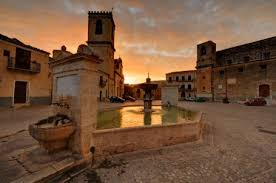
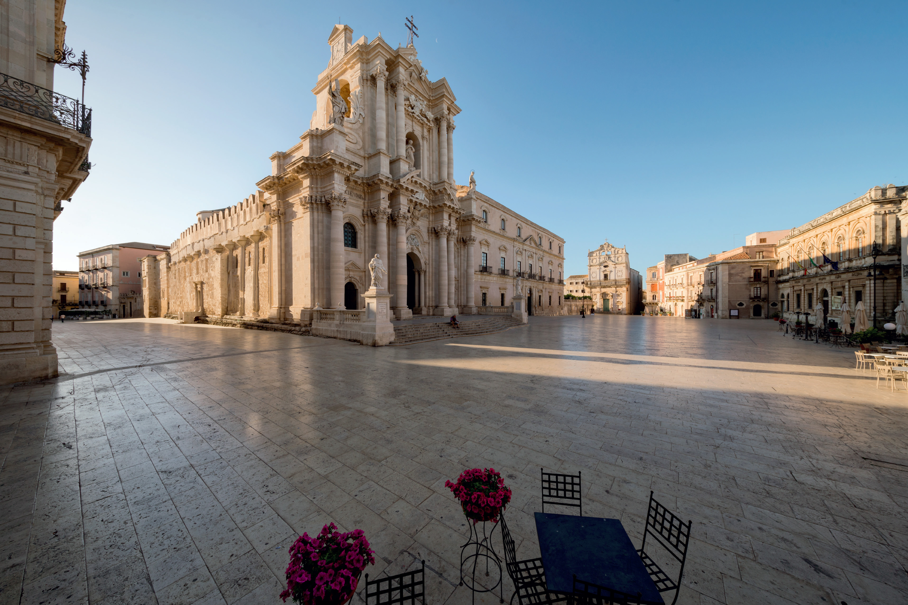
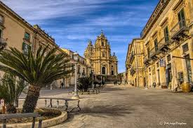
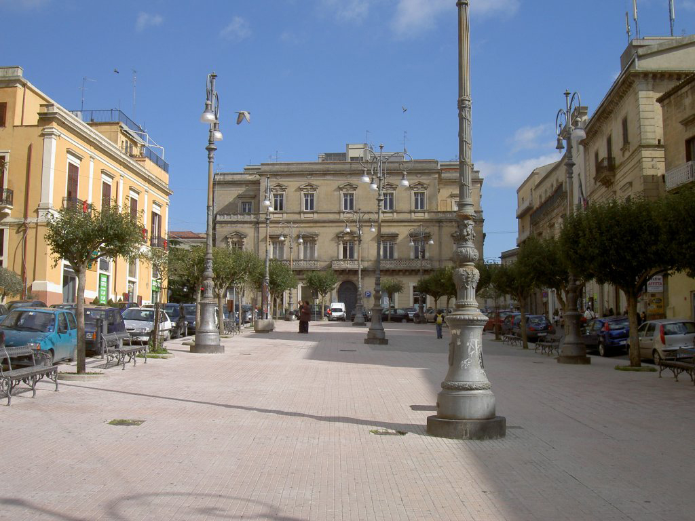
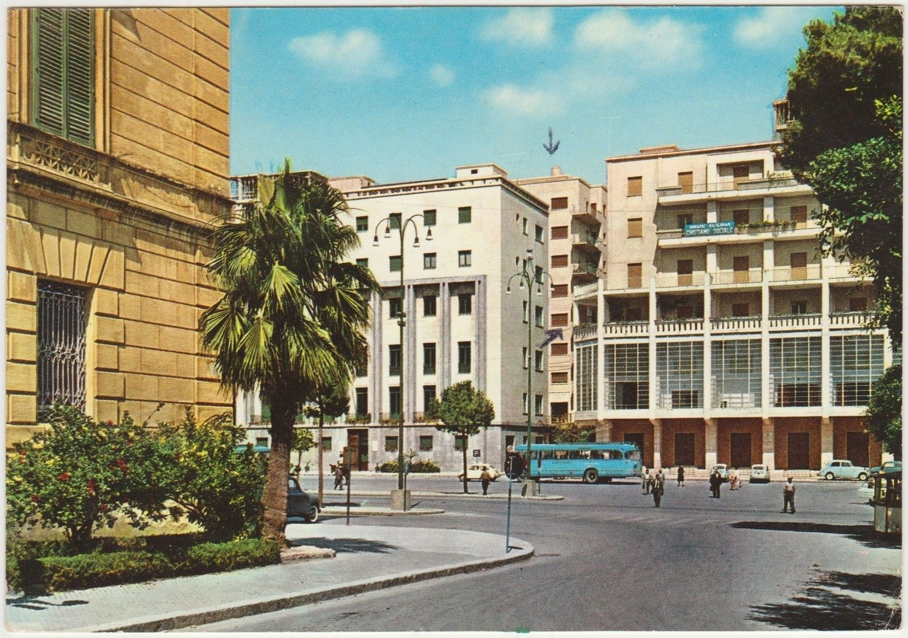
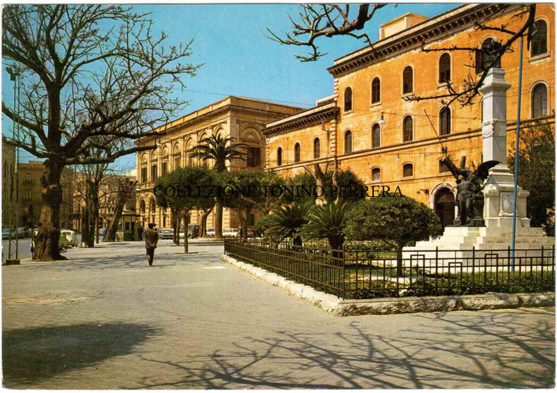
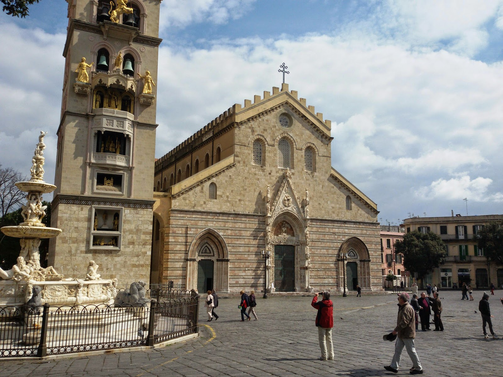
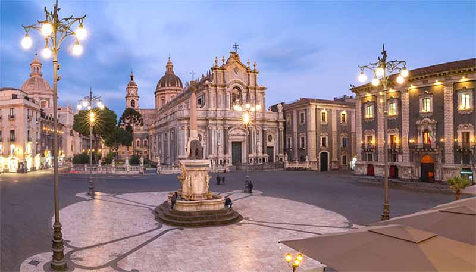

La piazza non è mai stata solo uno spazio vuoto tra gli edifici, il luogo dove la città smette di essere un insieme di case e diventa comunità.
La storia della piazza affonda le radici nell'Agorà greca, il cuore pulsante della democrazia dove il commercio si mescolava alla filosofia e alla politica. Per i greci, una città senza una piazza non era nemmeno degna di essere chiamata tale. I romani hanno poi ereditato questo concetto evolvendolo nel Foro, uno spazio più monumentale e gerarchico, centro del potere imperiale e della giustizia.

Famose serie tv come Il gattopardo di Netflix, Il commissario Montalbano o i leoni di sicilia sono state girate in alcune delle piazze più famose della Sicilia!
Curiosità & Cinema →









Suggerimenti e consigli sui luoghi più particolari dove andare a gustare piatti tipici e locali, organizzare una cena romantica o fermarsi a fare una pausa.
Ristoranti & Bar →Oggi, in un'era dominata dal digitale, la piazza resta l'ultimo baluardo del contatto fisico e visivo, il luogo dove la Storia incontra la vita quotidiana, tra un caffè al tavolino e una manifestazione di piazza.